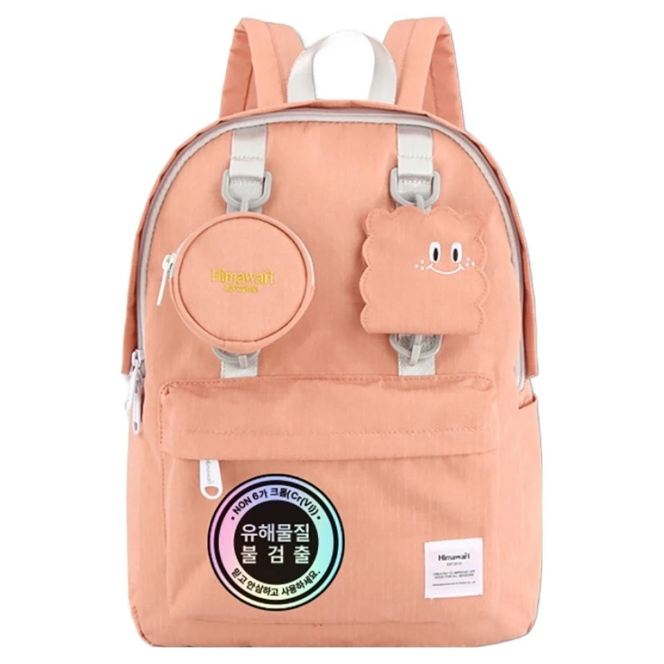
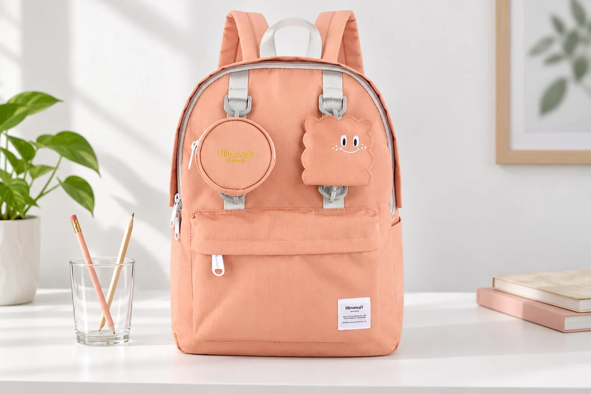

키링을 단 뒤에는 지퍼와 걸음을 함께 본다

가방에 키링을 대보면 어느 쪽에서 그림이 잘 보이는지 먼저 고르게 됩니다. 그 위치가 지퍼 손잡이를 가리거나 걸을 때 소매와 만나는지는 연결한 뒤 움직여봐야 알 수 있습니다. 장식은 멈춘 모습과 일상 동작을 함께 살펴볼 수 있는 소품입니다. 가방을 내려놓고 연결 위치를 확인한 다음 물건을 꺼내고 메고 벗는 순서까지 이어서 봅니다.
눈에 보이는 고리의 용도를 먼저
제품에 장식 연결용으로 안내된 부위가 있는지 확인합니다. 모든 고리가 같은 용도라고 가정하지 않고, 연결 가능 여부가 불분명하면 제품 문의로 확인합니다. 지퍼 손잡이를 무거운 물건의 연결부로 미리 정하지 않습니다. 장식을 달 공간이 없다는 이유로 원단에 구멍을 내거나 봉제선을 벌려 부품을 넣는 방식도 서두르지 않습니다. 원래 구조 안에서 가능한 선택을 고르면 됩니다.
키링 쪽의 연결 장치도 원래 안내를 봅니다. 열고 닫는 방향과 잠긴 상태를 확인하고 손으로 잡는 면을 정합니다. 장식이 하나여도 길게 달린 부품이나 여러 연결 고리가 있을 수 있으므로 전체 구성을 살펴봅니다. 일부만 보고 닫혔다고 판단하지 않고 연결한 뒤 어느 부품이 자유롭게 움직이는지 봅니다. 장식의 외형과 실제로 달리는 범위를 함께 읽는 준비입니다.
연결하기 전에는 자주 쓰는 포켓의 지퍼를 안내된 범위에서 움직여봅니다. 손잡이를 잡고 여는 동안 어느 자리를 지나가는지 보면 키링 끈과 겹칠 위치를 찾을 수 있습니다. 가방을 놓은 상태와 메고 꺼내는 상태가 다르면 두 동작도 살펴볼 수 있습니다. 보기 좋은 위치를 먼저 고른 뒤 지퍼가 걸려도 계속 쓰기보다 실제 이동 경로를 함께 보는 편이 장식을 다시 옮기는 일을 줄일 수 있습니다.
지퍼 손잡이를 잡을 자리가 남는지
키링을 안내된 부위에 연결한 뒤 원래 손잡이로 지퍼를 열고 닫아봅니다. 장식 때문에 잡을 면이 가려졌는지, 끈이 여밈 사이로 들어오는지 봅니다. 장식을 당겨 지퍼를 여는 도구로 사용하기보다 본래 손잡이를 사용합니다. 필요한 동작에 간섭이 있다면 장식 위치나 구성을 다시 검토합니다. 지퍼를 닫을 수 있다는 사실에 이어 같은 방식으로 반복 사용하기 편한지 살펴봅니다.
가방 안에 물건을 넣으면 앞면의 형태와 지퍼 주변도 달라질 수 있습니다. 빈 가방에서 괜찮았던 위치를 평소 짐을 넣은 뒤 다시 봅니다. 추가한 파우치나 겉옷이 장식 쪽을 밀어올렸는지도 확인합니다. 연결 위치를 바꾸려면 허용된 다른 부위가 있는지 안내를 읽습니다. 사용하는 물건이 바뀐 날에도 같은 장식 배치가 맞는지 보는 기준이 됩니다.
Himawari No.0422에 키링을 더할 계획이라면 실제 제품에서 연결 용도를 확인하고 한 장식의 전체 동작부터 살펴봅니다. 가방을 내려놓고 여밈을 확인한 뒤 평소 짐을 준비합니다. 장식이 사진에서 보이는 위치와 자신이 자주 여는 공간이 겹치는지 보는 순서입니다. 연결부의 원래 용도를 유지하면서 자기 사용 장면에 맞춰 장식을 고를 수 있습니다.

길이 대신 흔들리는 범위를
실내의 여유 있는 자리에서 천천히 움직이며 키링이 닿는 면을 봅니다. 끈 길이가 같아도 장식의 모양과 연결 위치에 따라 흔들리는 모습이 다를 수 있습니다. 옆 포켓이나 옷에 반복해서 닿는지, 가방을 벗을 때 소매와 함께 움직이는지 살펴봅니다. 주변에 걸릴 물건이 없는 곳에서 자기 동작을 확인하고 불편하다면 개수나 위치를 조정합니다. 어떤 길이가 모든 가방에 적합한 수치라고 정하지 않습니다.
앉거나 가방을 내려놓을 때에는 장식이 바닥이나 의자 부품과 만나는지 봅니다. 긴 끈이 틈을 지나가는 상태라면 그 위치를 정리합니다. 가방에 닿은 장식을 옆으로 계속 치워야 한다면 자신의 사용 방식과 잘 맞는지 다시 생각할 수 있습니다. 원래 구조에서 분리할 수 있는 소품은 장식 안내에 맞춰 잠시 떼는 선택도 가능합니다. 한 번 달았다는 이유로 모든 날에 같은 구성을 유지할 필요는 없습니다.
여러 장식을 함께 달고 싶다면 하나를 사용하는 상태에서 필요한 변화를 먼저 봅니다. 금속 부품끼리 맞닿거나 단단한 부분이 같은 면을 누르는지 살펴봅니다. 소리나 흔들림이 거슬린다면 장식을 줄여 비교할 수 있습니다. 안전한 무게 한도를 임의로 모든 제품에 공통 적용하지 않고 연결부와 장식의 안내를 확인합니다. 장식을 늘린 뒤에도 지퍼와 잡을 면이 남아 있는지가 필요합니다.
분리한 장식이 돌아갈 위치
키링을 분리할 때에는 가방을 안정된 자리에 두고 연결 부위를 받칩니다. 고리의 열리는 방향을 확인한 뒤 안내에 맞춰 다룹니다. 잘 빠지지 않는 상태를 원단이나 지퍼를 당기는 힘으로 해결하지 않습니다. 분리한 장식의 작은 부품은 같은 묶음으로 두고 연결된 자리에 변화가 보이는지 살펴봅니다. 눌림이나 마찰 흔적이 있다면 다음 사용 전에 관리 안내와 필요한 문의를 확인합니다.
가방을 관리하거나 보관할 때에도 장식의 상태를 함께 정합니다. 분리한 소품은 다음에 찾을 위치로 옮기고 제품에 남은 부분이 있는지 봅니다. 장식 때문에 가방을 자연스럽게 놓기 어렵다면 보관 구성도 바꿀 수 있습니다. 손잡이나 끈에 걸린 장식을 그대로 눌러 넣기보다 각 제품이 안내하는 상태로 정리합니다. 다시 연결할 때에도 같은 부위의 용도와 잠긴 모습을 확인합니다.
키링을 고르는 마지막에는 가방을 열어 물건을 꺼내보고 메고 벗는 동작을 다시 해봅니다. 장식의 그림을 즐기면서도 계속 옆으로 치워야 하는 부분이 없는지 봅니다. 좋아하는 소품을 달 방법이 현재 구조에서 불분명하면 별도 장식 보관 방법을 고를 수 있습니다. 사진의 위치와 실제 사용하는 위치가 모두 결정되었다면 장식이 있는 가방의 준비도 일상의 동작으로 이어집니다.